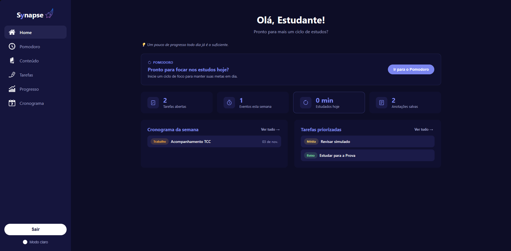
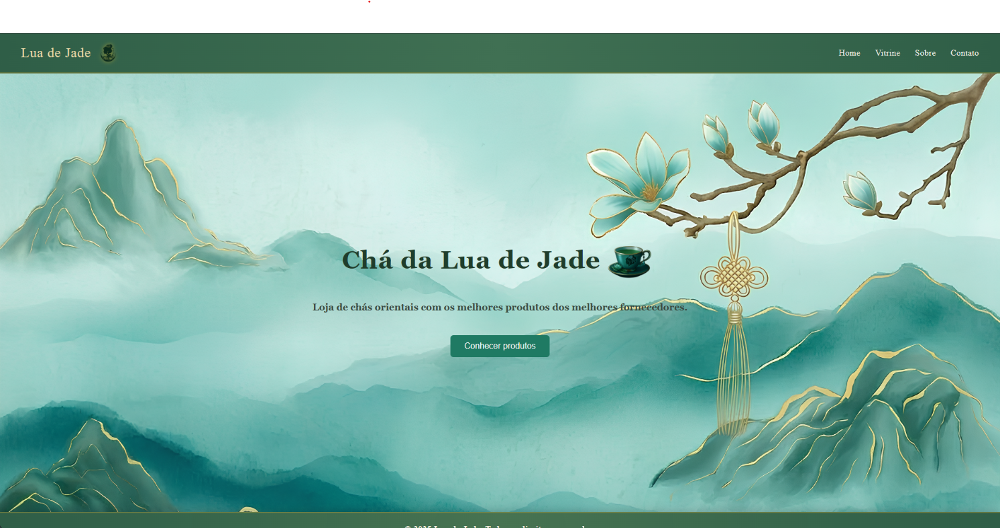

FRONT END DEVELOPER
BASED IN BRASIL
/ DESENVOLVEDOR FRONT END
/ WEB DESIGN (UI/UX)
/ DESENVOLVIMENTO DE APLICAÇÕES

Sou um Designer UI/UX que desenha experiências digitais com personalidade, onde cada detalhe tem um propósito.
Projetos
Explore projetos que mostram como transformo ideias em interfaces: entendendo o usuário, testando soluções e refinando cada detalhe até a entrega
-

-
